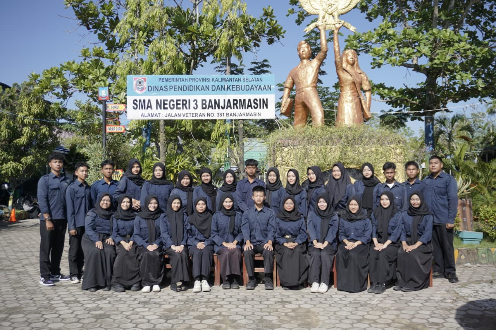
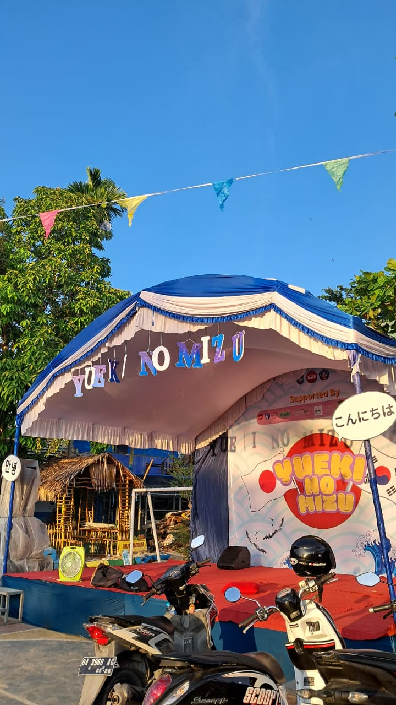
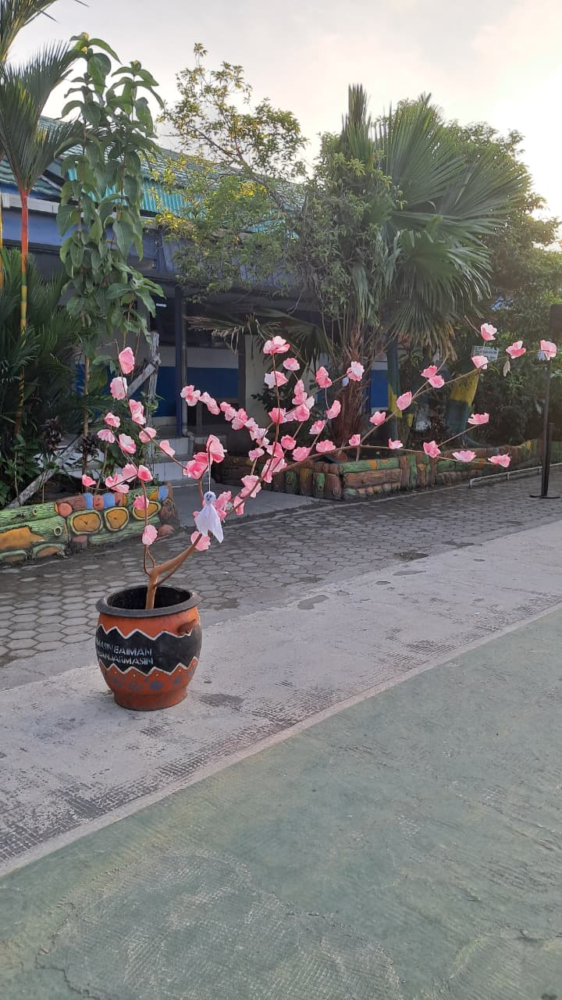
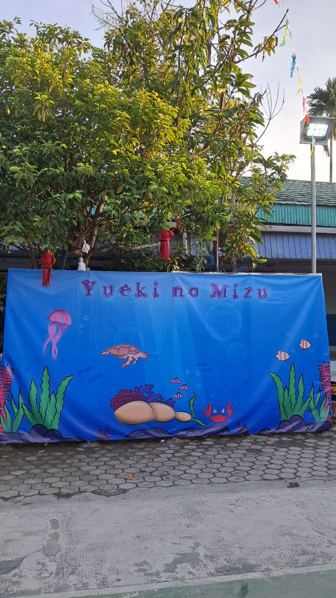
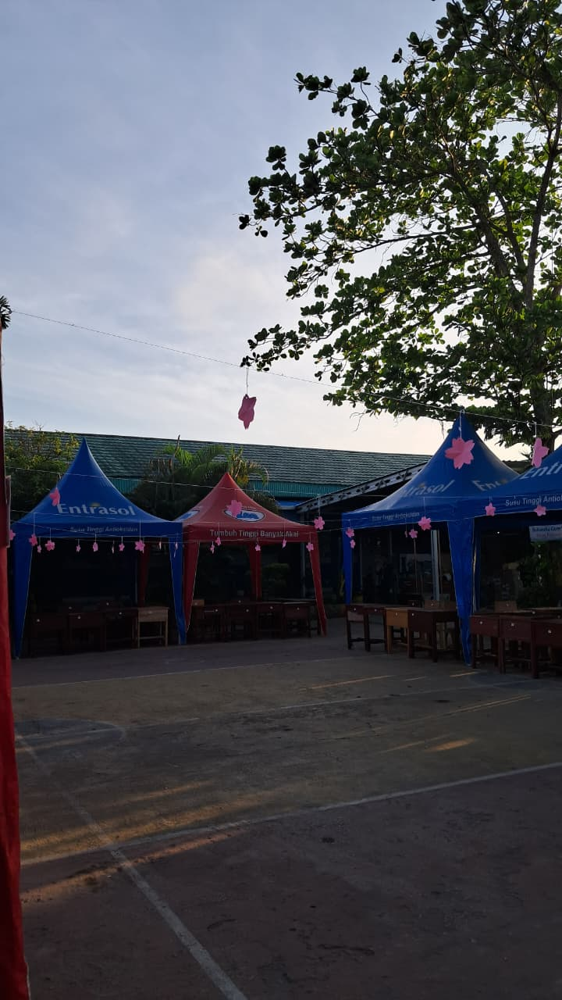
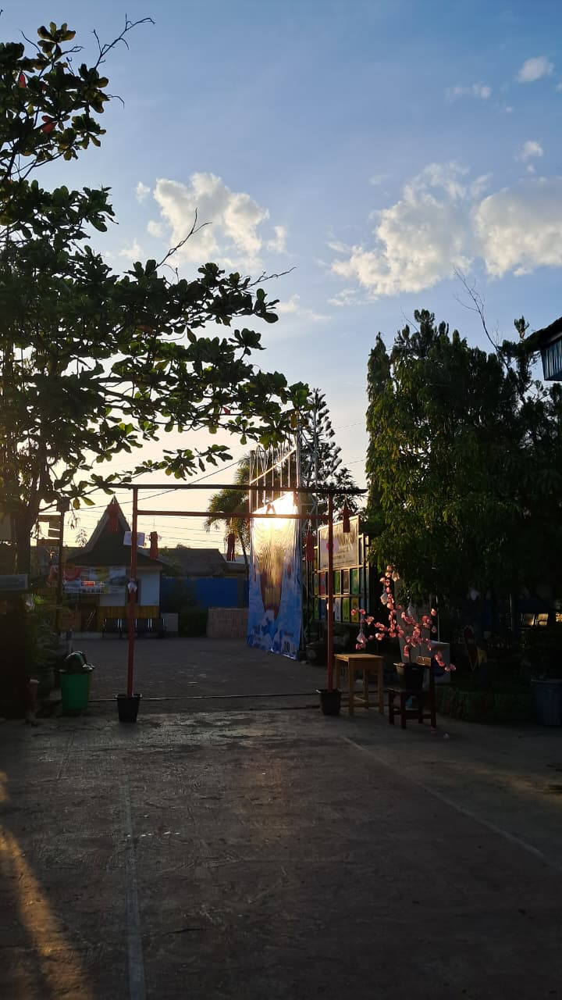
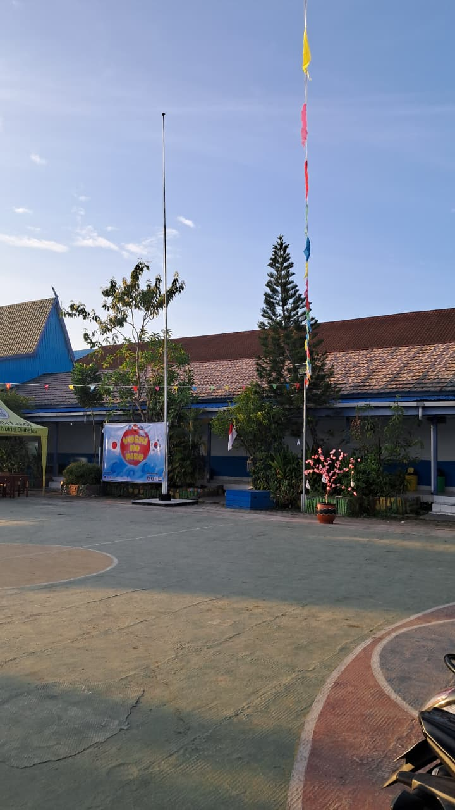
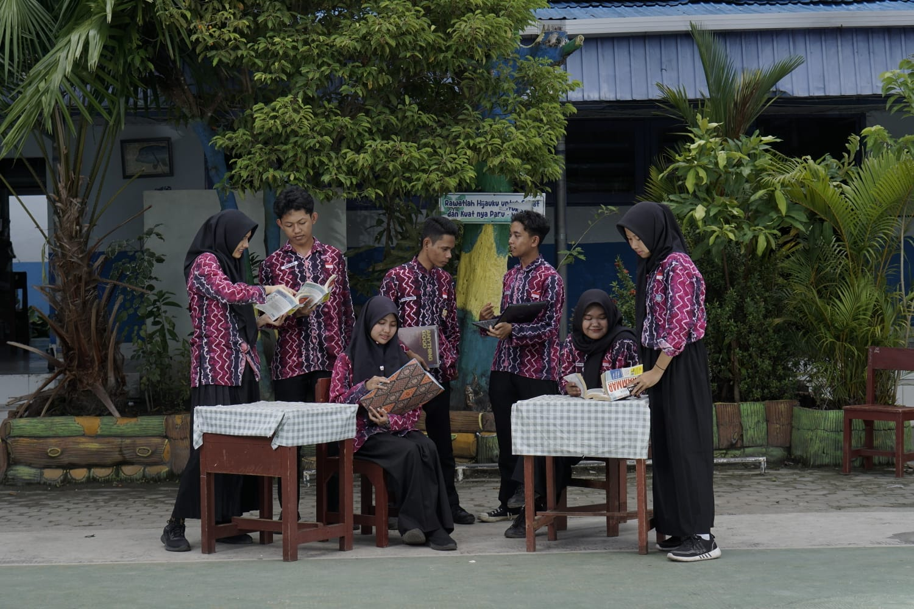
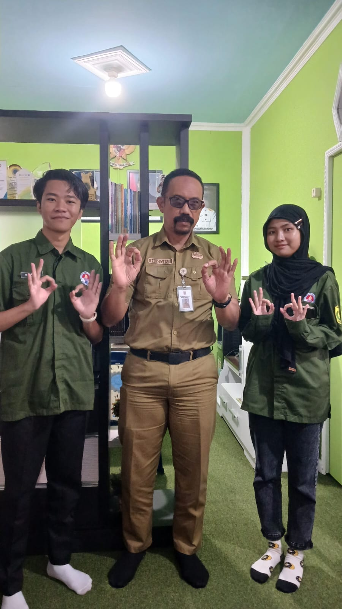
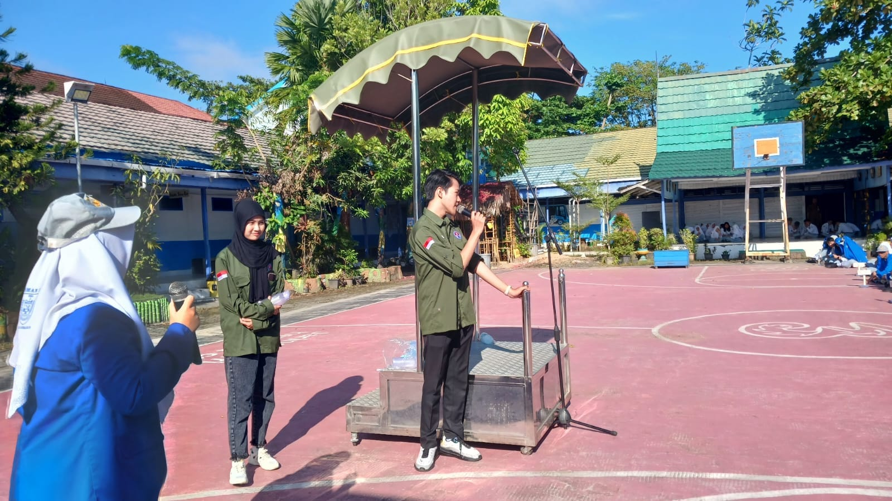

Student Council







Served two consecutive terms in the Student Council (OSIS), demonstrating dedication and continuous trust from the school community. Frequently selected as the point person for decoration, which honed a proactive creative mindset and a skill for transforming empty spaces into impactful, themed environments. The projects showcased in this portfolio (from image 2 onwards) highlight my most significant contributions to school event visual identity and execution.
Secretary of English Club

Served as the Secretary for the English Club, working closely alongside the President to streamline all extracurricular administrative tasks. Managed daily operations including member attendance tracking, official correspondence, and document organization, ensuring smooth administrative execution and clear communication within the organization.
Pepelingasih Banjarmasin




Joined Pepelingasih Banjarmasin as a semifinalist in their Ambassador Competition and actively contributed as a Graphic Designer (using Canva) in the Media Division. Responsible for creating engaging visual content, including commemorative graphics for national holidays, official birthday greetings for the Mayor and team members, and interactive storygrams. Another result here